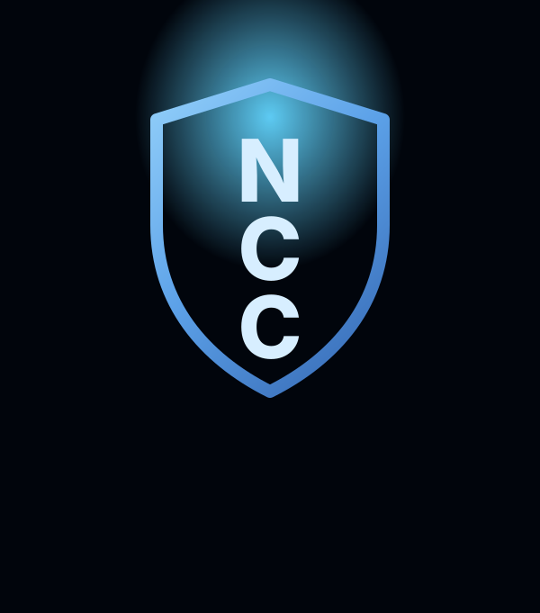

Biblical Teaching
Teaching rooted in scripture, practical for everyday life, and centered on Jesus.
Reliability Through Innovation
New Community Church exists to serve people at every stage of faith with Christ-centered teaching, care, and digital access to worship throughout the week.
Join us on Sunday at 11:00 AM and Wednesday at 7:00 PM via Zoom.
Watch Latest Message Plan Your Visit
Teaching rooted in scripture, practical for everyday life, and centered on Jesus.
A community where we celebrate victories and carry one another through difficult seasons.
Live and on-demand media experiences that extend ministry beyond Sunday gatherings.
Video Block A: Live Worship Feed (YouTube embed) with Zoom join options for interactive attendance.
Video Block B: On-demand sermon and media archive cards.
Browse additional sermons, livestream archives, and ministry clips from the official channel.
Video Block C: Featured from New Community Christian Center Church Facebook media.

Loading pastor blog status...
Preparing latest inspiration updates.
Enable browser alerts for live service reminders and event updates.
Current permission: default